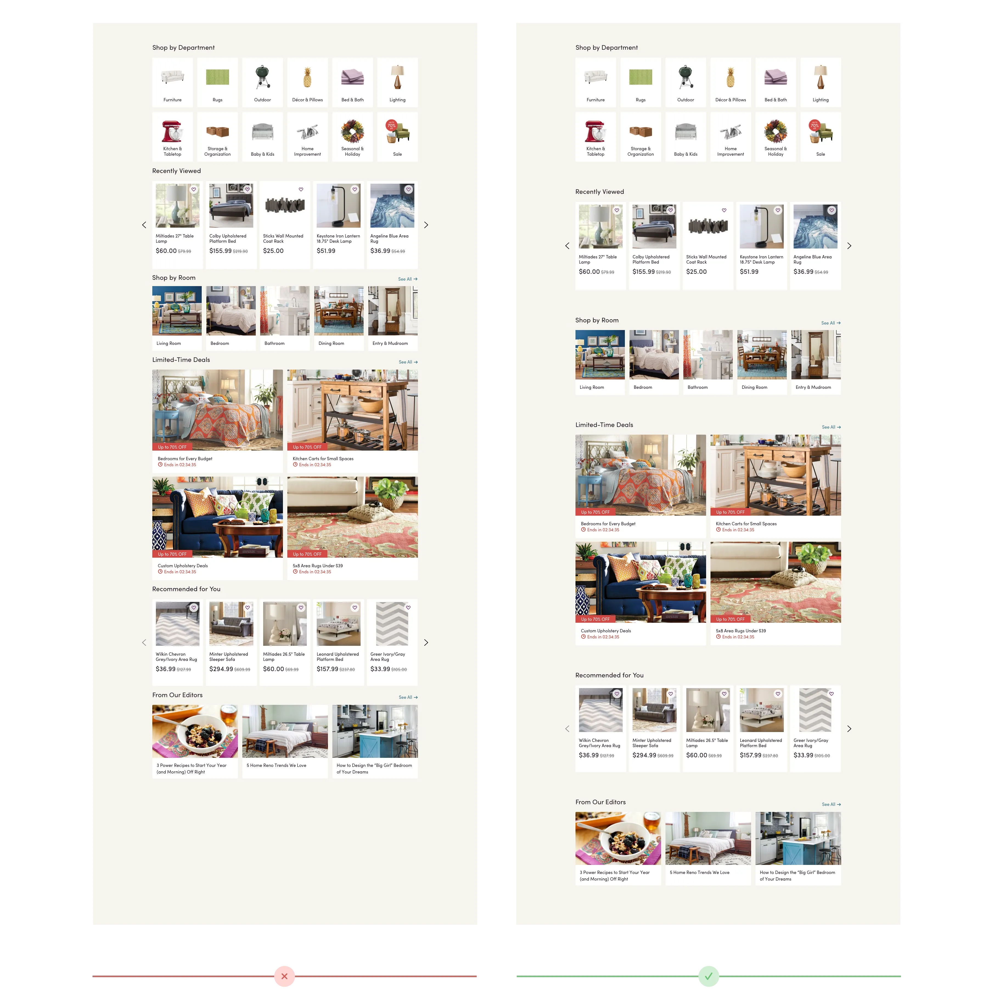

Web Design
Basic Design Elements and Techniques
Design is not just what it looks like and feels like.
Design is how it works. Steve Jobs
Elements of good web design.
Designing a website is not only making it look nice. It's about creating an effective experience for the user.
Whether you're building a personal blog, an online store, or a business site, certain key elements can make all the difference. Here are the most important ones:
- Easy Navigation: The navigation should be consistent and clear across all pages. You should be able to navigate across all pages from any page in your site.
- Responsiveness: The site should work well and look good in all browsers and devices.
- Consistency: There should be a sense of continuity across all pages. That include the use of the same fonts, the color scheme, and the overall tone of the page.
- Content Clarity: Make sure that the user will find and understand the information. A clear and well-structured website is always easier to navigate.
- Performance: Make sure your site loads fast and that you are not using unnecessary elements. That includes using images that are too big, or using scripts that might look good but add an unnecesary load to the page.
- Legibility: Make sure the content is readable. (color contrast, font size and style). Add enough padding to the content to avoid making the lines too long.
- Readability: Keep tone consistent with your audience and make your point quickly.
- Comprehension: Create content that is easy to read and understand. The average comprehension level for a website should generally be around a 7th to 9th-grade reading level (12-14 years old). Keep this rule, unless you are sure that your content is targeted to an audience which requires a different level. (i.e: technical papers, medical publications).
COLOR
Color is one of the first things people notice when they visit a website—it sets the mood, reinforces branding, and influences user behavior. A well-chosen color scheme can enhance readability, guide attention, and create an emotional connection with visitors.
The following video shows how you can use color to create a visually appealing website.
- Red: bold, active, passionate, lovable, exciting, and energetic. (Coca-Cola)
- Orange: sociable, happy, affordable, and friendly.
- Yellow: Confidence, logical, forward-thinking, optimistic, and playful
- Blue: security, trustworthiness, calmness, honesty, care, and strength
- Purple: Nostalgic, creative, royal and imaginative
- Green: fresh, growth, earth, natural, healthy and organic.
- Black: luxury, sophistication, authority, formal, and seductiveness.
- Brown: solid, much like the earth, resilience, dependability, security, and safety. (UPS)
- Violet: Luxury, spirituality, healing.
- Gray: Intellect, maturity, neutral.
- White: Cleanliness, nimplicity, clarity.
Color Selection
Color is one of the most powerful design elements on a website.
On average, product assessment takes only 90 seconds and between 60% and 90% of this judgment is made on the color alone!
The Color Palette
- A color palette is a combination of colors used in a design.
- A color palette can be just one color in many shades, called (monochromatic)
- You can use upt to 8 colors that complement each other.
- Pick a core color and work around it.
- You can also use an image to get a color palette.
Color Palette Generators
There are many tools that can help you create a color palette for your website. Below are some of the most used:
- Real Time Colors (See demo on the next slide)
- Coolors
- Color Space
- Adobe Color

Using Real Time Colors
This is a great tool to visualize your colors and fonts on a Real website.
Typography
Over 95% of information on the web is text. Selecting the right typography is more than just picking a stylish font.
It plays a crucial role in how users engage with and understand content online. The right typography enhances readability, guides user attention, and reinforces a brand’s identity
- Low Contrast Text: hard to read, specially if you have visual contrast issues.
- Too Wide Paragraphs: The ideal length should be between 50 to 75 characters per line.
- Too little Space between lines: line-height should be at least 1.5 times bigger than the font size.
- Walls of text: Give enough space, use multiple paragraphs and inline elements to make the text easier to scan.
- Small font size: Use minimum 16px.
- Overly Decorative fonts: Use them sparingly and for short sentences or single words.
- Using Core or System Fonts: Try not to use them. They are already overused and will make your site feel outdated.
- Using Too many fonts: Try to limit the use of fonts to maximum 2.
Font Selection.
Font selection is very important in your website. It helps set the tone of your site.
Font Pairings
- Stick to Two, Max Three Font Families. (2 is better)
- Instead of using multiple fonts, you can create variety with different weights (bold, light, etc.) and styles (italic, UPPERCASE).
- Use one font for headings and another for body text to create contrast. Headings should be bold and attention-grabbing, while body text should be easy to read.
- Avoid overly decorative fonts for body text, as they can strain the eyes.
- Google Font Pairing suggestions.
- Font Pairing best and worst practices.

White Space, Margins and Paddings.
That white space between and around the elements in your page.
- White space helps maintain focus by driving your eye to a specific element.
- It improves visual organization.
- It improves readability.

Your content should be readable
When designing your content, keep in mind that ic can be viewed in screens of any size.
Yopu want your site to be easy to read.
- 45 to 80 characters (per line) is the ideal line length for text on websites.
- Font size should be at least 16px.
- Line spacing should be around 150% of the size of the font.
- Dark text in a light background is easier to read.
- This site is hard to read.
- If you use light text on a dark background, make sure the size is big enough.
- Website Readability Guidelines.